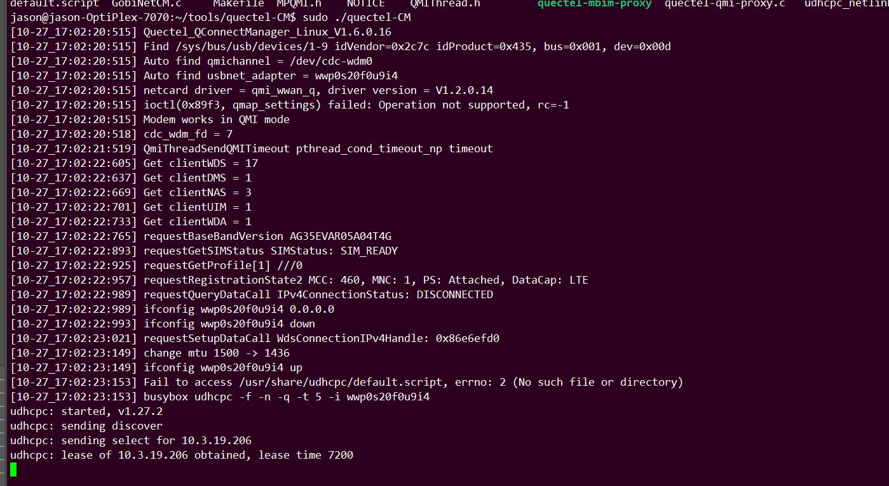

quectel-CM
Quectel Connect Manager is also called quectel-CM, hereinafter referred to as CM. In the following text, Quectel Connect Manager, quectel-CM and CM refer to the same thing. The CM version used by 5G modules (RM500Q and RG500Q) uses the latest version (1.6.0.16). It is recommended to use the latest version of CM tool for 4G modules (EC2X).
title: the QMI between modules and the Host AP
participant HostAP
participant QuectelModules
HostAP -> QuectelModules: QMICTL_SYNC_REQ
QuectelModules->HostAP: QMICTL_SYNC_RESP
HostAP->QuectelModule : ...
QuectelModules->HostAP: ...
HostAP->QuectelModules: QMIWDS_GET_PKT_SRVC_STATUS_REQ
QuectelModules->HostAP: QMIWDS_GET_PKT_SRVC_STATUS _RESP
detailed please refer to kba-20190602_guide_to_use_qmap
This doc can be accessed by the Quectel.
prerequisites
Network status check
Confirm that the module is registered on the 4G or 5G network. Use AT command to check
/[]AT+COPS? []AT+QENG=servingcell
dhcp client program
The PC or server system comes with dhclient, and the embedded platform uses udhcpc, one of the busybox tools.Network card driver
CM is used for RMNET network card (AT+QCFG=usbnet, 0), corresponding to driver qmi_wwan_q or GobiNet; and MBIM network card (AT+QCFG=usbnet, 2), corresponding to driver cdc_mbim.
Build and Copy to Target Platform
If you use make directly on the current system, cross-compile the source code for the embedded platform. Finally generate the target file
quectel-CM: target executable file
qmi-proxy and mbim-proxy: proxy tools for multi-way dialing. If multi-way dialing is not needed, ignore them.
Notes:
Gcc version is lower (lower than 4.6), add -lrt to CFLAGS.
Copy the three compiled target files to the target platform. If it is an embedded platform, copy the default.script in the quectel-CM source code to the target platform.
Notes:
default.script is an important script called by udhcpc.
The default script cannot contain invisible characters. For example, if it is opened in DOS system (Win10), each line will end with \r\n, which will cause it to fail to execute normally in Unix system.
Execute dos2unix default.script on the target platform
dos2unix is a small tool that converts DOS system characters to Unix system characters.
You can also use vim to open default.script and manually delete the ^M at the end of each line of default.script.
default.script has execution permission. chmod +x default.script.
The default location of default.script is generally /etc/udhcpc/ or /usr/share/udhcpc/
CM dial-up uses busybox udhcpc by default (see udhcpc.c in the CM source code directory for details). For embedded systems, udhcpc needs to be checked when compiling busybox or buildroot, otherwise it needs to be ported additionally.
If you use Dhclient, you need to turn it on. #define USE_DHCLIENT.
Run CM
quectel-CM supports various dialing requirements such as multi-channel dialing, log storage, multiple modules, and specified APN information.
root@m:/home/m/quectel-CM# ./quectel-CM --help
Quectel_QConnectManager_Linux_V1.6.0.16
Usage: ./quectel-CM [options]
-s [apn [user password auth]] Set apn/user/password/auth
-p pincode Verify sim card pin if sim card is locked
-f logfilename Save log message of this program to file
-u usbmonlog filename Save usbmon log of this program to file
-i interface Specify network interface(default auto-detect)
-4 IPv4 protocol
-6 IPv6 protocol
-m muxID Specify muxid when set multi-pdn data connection.
-n channelID Specify channelID when set multi-pdn data connection(default 1).
-k channelID Send SIGINT to quectel-CM which multi-pdn is channelID.
-r Detach and attach kernel driver before open device.
-b enable network interface bridge function(default 0).
[Examples]
Example 1: ./quectel-CM
Example 2: ./quectel-CM -s 3gnet
Example 3: ./quectel-CM -s 3gnet carl 1234 0 -p 1234 -f gobinet_log.txt
QMI Driver
Use AT commands to configure the module’s USB network card type to MBIM
AT+QCFG=usbnet，0
After restarting the module, confirm
root@m:/home/m/quectel-CM# lsusb -t
/: Bus 02.Port 1: Dev 1, Class=root_hub, Driver=xhci_hcd/4p, 5000M
/: Bus 01.Port 1: Dev 1, Class=root_hub, Driver=xhci_hcd/11p, 480M
|__ Port 4: Dev 12, If 3, Class=Vendor Specific Class, Driver=option, 480M
|__ Port 4: Dev 12, If 1, Class=Vendor Specific Class, Driver=option, 480M
|__ Port 4: Dev 12, If 4, Class=Vendor Specific Class, Driver=qmi_wwan_q, 480M
|__ Port 4: Dev 12, If 2, Class=Vendor Specific Class, Driver=option, 480M
|__ Port 4: Dev 12, If 0, Class=Vendor Specific Class, Driver=option, 480M
Run quectel-CM to start dialing
[11-30_17:26:14:656] Quectel_QConnectManager_Linux_V1.6.0.16
[qmidevice_detect]/sys/bus/usb/devices/1-4/idProduct
[11-30_17:26:14:657] Find /sys/bus/usb/devices/1-4 idVendor=0x2c7c idProduct=0x125, bus=0x001, dev=0x00d
[11-30_17:26:14:657] Auto find qmichannel = /dev/cdc-wdm0
[11-30_17:26:14:657] Auto find usbnet_adapter = wwan0
[11-30_17:26:14:657] netcard driver = qmi_wwan_q, driver version = V1.2.0.14
[11-30_17:26:14:657] ioctl(0x89f3, qmap_settings) failed: Operation not supported, rc=-1
[11-30_17:26:14:658] qmap_mode = 1, qmap_version = 5, qmap_size = 4096, muxid = 0x81, qmap_netcard = wwan0
[11-30_17:26:14:658] Modem works in QMI mode
[11-30_17:26:14:669] cdc_wdm_fd = 7
[11-30_17:26:15:670] QmiThreadSendQMITimeout pthread_cond_timeout_np timeout
[11-30_17:26:16:755] Get clientWDS = 18
[11-30_17:26:16:787] Get clientDMS = 1
[11-30_17:26:16:819] Get clientNAS = 3
[11-30_17:26:16:852] Get clientUIM = 1
[11-30_17:26:16:883] Get clientWDA = 1
[11-30_17:26:16:915] requestBaseBandVersion EC20CEHCLGR06A03M1G
[11-30_17:26:16:947] qmap_settings.rx_urb_size = 4096
[11-30_17:26:16:947] qmap_settings.ul_data_aggregation_max_datagrams = 11
[11-30_17:26:16:947] qmap_settings.ul_data_aggregation_max_size = 4096
[11-30_17:26:16:947] qmap_settings.dl_minimum_padding = 16
[11-30_17:26:17:075] requestGetSIMStatus SIMStatus: SIM_READY
[11-30_17:26:17:107] requestGetProfile[1] cmnet///0
[11-30_17:26:17:139] requestRegistrationState2 MCC: 460, MNC: 0, PS: Attached, DataCap: LTE
[11-30_17:26:17:172] requestQueryDataCall IPv4ConnectionStatus: DISCONNECTED
[11-30_17:26:17:172] ifconfig wwan0 0.0.0.0
[11-30_17:26:17:178] ifconfig wwan0 down
[11-30_17:26:17:234] requestSetupDataCall WdsConnectionIPv4Handle: 0xe17f2560
[11-30_17:26:17:364] ifconfig wwan0 up
[11-30_17:26:17:369] busybox udhcpc -f -n -q -t 5 -i wwan0
udhcpc: started, v1.30.1
udhcpc: sending discover
udhcpc: sending select for 10.199.162.152
udhcpc: lease of 10.199.162.152 obtained, lease time 7200
[11-30_17:26:17:504] /etc/udhcpc/default.script: Resetting default routes
[11-30_17:26:17:509] /etc/udhcpc/default.script: Adding DNS 211.138.180.2
[11-30_17:26:17:509] /etc/udhcpc/default.script: Adding DNS 211.138.180.3
GobiNet
Confirm the driver
root@m:/home/m/quectel-CM# lsusb -t /: Bus 02.Port 1: Dev 1, Class=root_hub, Driver=xhci_hcd/4p, 5000M /: Bus 01.Port 1: Dev 1, Class=root_hub, Driver=xhci_hcd/11p, 480M |__ Port 4: Dev 12, If 3, Class=Vendor Specific Class, Driver=option, 480M |__ Port 4: Dev 12, If 1, Class=Vendor Specific Class, Driver=option, 480M |__ Port 4: Dev 12, If 4, Class=Vendor Specific Class, Driver=GobiNet, 480M |__ Port 4: Dev 12, If 2, Class=Vendor Specific Class, Driver=option, 480M |__ Port 4: Dev 12, If 0, Class=Vendor Specific Class, Driver=option, 480M
Run the quectel-CM
[11-30_17:31:09:638] Quectel_QConnectManager_Linux_V1.6.0.16 [qmidevice_detect]/sys/bus/usb/devices/1-4/idProduct [11-30_17:31:09:639] Find /sys/bus/usb/devices/1-4 idVendor=0x2c7c idProduct=0x125, bus=0x001, dev=0x00e [11-30_17:31:09:639] Auto find qmichannel = /dev/qcqmi0 [11-30_17:31:09:639] Auto find usbnet_adapter = usb0 [11-30_17:31:09:639] netcard driver = GobiNet, driver version = V1.6.2.9 [11-30_17:31:10:067] qmap_mode = 1, qmap_version = 5, qmap_size = 4096, muxid = 0x81, qmap_netcard = usb0 [11-30_17:31:10:067] Modem works in QMI mode [11-30_17:31:10:099] Get clientWDS = 7 [11-30_17:31:10:131] Get clientDMS = 8 [11-30_17:31:10:163] Get clientNAS = 9 [11-30_17:31:10:195] Get clientUIM = 10 [11-30_17:31:10:227] requestBaseBandVersion EC20CEHCLGR06A03M1G [11-30_17:31:10:355] requestGetSIMStatus SIMStatus: SIM_READY [11-30_17:31:10:387] requestGetProfile[1] cmnet///0 [11-30_17:31:10:419] requestRegistrationState2 MCC: 460, MNC: 0, PS: Attached, DataCap: LTE [11-30_17:31:10:450] requestQueryDataCall IPv4ConnectionStatus: DISCONNECTED [11-30_17:31:10:450] ifconfig usb0 0.0.0.0 [11-30_17:31:10:455] ifconfig usb0 down [11-30_17:31:10:515] requestSetupDataCall WdsConnectionIPv4Handle: 0xe17f16c0 [11-30_17:31:10:643] ifconfig usb0 up [11-30_17:31:10:650] busybox udhcpc -f -n -q -t 5 -i usb0 udhcpc: started, v1.30.1 udhcpc: sending discover udhcpc: sending select for 10.211.128.177 udhcpc: lease of 10.211.128.177 obtained, lease time 7200 [11-30_17:31:10:799] /etc/udhcpc/default.script: Resetting default routes [11-30_17:31:10:807] /etc/udhcpc/default.script: Adding DNS 211.138.180.2 [11-30_17:31:10:807] /etc/udhcpc/default.script: Adding DNS 211.138.180.3
MBIM
Confirm that the driver configures the module’s USB network card type to MBIM through AT commands.
AT+QCFG=usbnet，2
After restarting the module, confirm
/: Bus 01.Port 1: Dev 1, Class=root_hub, Driver=xhci_hcd/11p, 480M
|__ Port 4: Dev 11, If 3, Class=Vendor Specific Class, Driver=option, 480M
|__ Port 4: Dev 11, If 1, Class=Vendor Specific Class, Driver=option, 480M
|__ Port 4: Dev 11, If 4, Class=Communications, Driver=cdc_mbim, 480M
|__ Port 4: Dev 11, If 2, Class=Vendor Specific Class, Driver=option, 480M
|__ Port 4: Dev 11, If 0, Class=Vendor Specific Class, Driver=option, 480M
|__ Port 4: Dev 11, If 5, Class=CDC Data, Driver=cdc_mbim, 480M
Run the quectel-CM
[11-30_16:56:42:350] Quectel_QConnectManager_Linux_V1.6.0.16
[qmidevice_detect]/sys/bus/usb/devices/1-4/idProduct
[11-30_16:56:42:351] Find /sys/bus/usb/devices/1-4 idVendor=0x2c7c idProduct=0x125, bus=0x001, dev=0x00b
[11-30_16:56:42:352] Auto find qmichannel = /dev/cdc-wdm0
[11-30_16:56:42:352] Auto find usbnet_adapter = wwan0
[11-30_16:56:42:352] netcard driver = cdc_mbim, driver version = 22-Aug-2005
[11-30_16:56:42:352] ioctl(0x89f3, qmap_settings) failed: Operation not supported, rc=-1
[11-30_16:56:42:352] Modem works in MBIM mode
[11-30_16:56:42:352] apn (null), user (null), passwd (null), auth 0
[11-30_16:56:42:352] IP Proto MBIMContextIPTypeIPv4
[11-30_16:56:42:352] mbim_read_thread is created
sh: /sys/class/net/wwan0/mbim/link_state: 没有那个文件或目录
[11-30_16:56:42:356] system(echo 0 > /sys/class/net/wwan0/mbim/link_state)=256
[11-30_16:56:42:361] system(ip address flush dev wwan0)=0
[11-30_16:56:42:365] system(ip link set dev wwan0 down)=0
[11-30_16:56:42:365] mbim_open_device()
[11-30_16:56:42:552] mbim_device_caps_query()
[11-30_16:56:42:584] DeviceId: 867394041355693
[11-30_16:56:42:584] FirmwareInfo: EC20CEHCLGR06A03M1G
[11-30_16:56:42:584] HardwareInfo: QUECTEL Mobile Broadband Modul
[11-30_16:56:42:584] mbim_device_services_query()
[11-30_16:56:42:616] mbim_set_radio_state( 1 )
[11-30_16:56:42:647] HwRadioState: 1, SwRadioState: 1
[11-30_16:56:42:647] mbim_subscriber_status_query()
[11-30_16:56:42:712] SubscriberReadyState NotInitialized -> Initialized
[11-30_16:56:42:712] mbim_register_state_query()
[11-30_16:56:42:744] RegisterState Unknown -> Home
[11-30_16:56:42:744] mbim_packet_service_query()
[11-30_16:56:42:776] PacketServiceState Unknown -> Attached
[11-30_16:56:42:776] mbim_query_connect(sessionID=0)
[11-30_16:56:42:808] ActivationState Unknown -> Deactivated
[11-30_16:56:42:808] mbim_set_connect(onoff=1, sessionID=0)
[11-30_16:56:42:872] ActivationState Deactivated -> Activated
[11-30_16:56:42:872] mbim_ip_config(sessionID=0)
[11-30_16:56:42:904] < SessionId = 0
[11-30_16:56:42:904] < IPv4ConfigurationAvailable = 0xf
[11-30_16:56:42:904] < IPv6ConfigurationAvailable = 0x0
[11-30_16:56:42:904] < IPv4AddressCount = 0x1
[11-30_16:56:42:904] < IPv4AddressOffset = 0x3c
[11-30_16:56:42:904] < IPv6AddressCount = 0x0
[11-30_16:56:42:904] < IPv6AddressOffset = 0x0
[11-30_16:56:42:904] < IPv4 = 10.140.255.29/30
[11-30_16:56:42:904] < gw = 10.140.255.30
[11-30_16:56:42:904] < dns1 = 211.138.180.2
[11-30_16:56:42:904] < dns2 = 211.138.180.3
[11-30_16:56:42:904] < ipv4 mtu = 1500
[11-30_16:56:42:908] system(echo 1 > /sys/class/net/wwan0/mbim/link_state)=256
[11-30_16:56:42:914] system(ip link set dev wwan0 up)=0
[11-30_16:56:42:918] system(ip -4 address flush dev wwan0)=0
[11-30_16:56:42:922] system(ip -4 address add 10.140.255.29/30 dev wwan0)=0
[11-30_16:56:42:926] system(ip -4 route add default via 10.140.255.30 dev wwan0)=0
[11-30_16:56:42:929] system(ip -4 link set dev wwan0 mtu 1500)=0
udhcpc
RESOLV_CONF="/etc/resolv.conf"
case $1 in
bound|renew)
[ -n "$broadcast" ] && BROADCAST="broadcast $broadcast"
[ -n "$subnet" ] && NETMASK="netmask $subnet"
/sbin/ifconfig $interface $ip $BROADCAST $NETMASK
if [ -n "$router" ]; then
echo "$0: Resetting default routes"
while /sbin/route del default gw 0.0.0.0 dev $interface; do :; done
metric=0
for i in $router; do
/sbin/route add default gw $i dev $interface metric $metric
metric=$(($metric + 1))
done
fi
# Update resolver configuration file
R=""
[ -n "$domain" ] && R="domain $domain"
for i in $dns; do
echo "$0: Adding DNS $i"
R="${R}nameserver $i"
done
if [ -x /sbin/resolvconf ]; then
echo -n "$R" | resolvconf -a "${interface}.udhcpc"
else
echo -n "$R" > "$RESOLV_CONF"
fi
;;
deconfig)
if [ -x /sbin/resolvconf ]; then
resolvconf -d "${interface}.udhcpc"
fi
/sbin/ifconfig $interface 0.0.0.0
;;
leasefail)
echo "$0: Lease failed: $message"
;;
nak)
echo "$0: Received a NAK: $message"
;;
*)
echo "$0: Unknown udhcpc command: $1";
exit 1;
;;
esac
COMMON Issue
You will see log as follow:

There will be no more log later.
There are some things you should check:
1.modemmanager
2.There is a valid default.script for udhcpc
- It is /etc/udhcpc/default.script but not /usr/share/udhcpc/default.script
- The default.script has invisble characters. dos2unix default.script
- No execution permission. chmod +w default.script
3.On Ubuntu/Centos PC, it's recommended and easier to use dhclient.